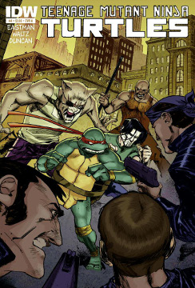

The TMNT as they are commonly known was once nothing more than a black and white comic strip but soon their fame sky rocketed with Saturday morning cartoons, comic books, and even a series of movies.
The story of the Teenage Mutant Ninja Turtles starts in Japan in the year 1964 with the pet rat of Hamato Yoshi. The rat would often watch his owner as he practiced Ninjitsu and would try and mimic him. Yoshi was the best warrior of the Foot
Clan, his only rival was a man named Oroku Nagi with whom he competed in all things but none more fiercely than for the love of the lady Tang Shen. Both tried to woo her but from the beginning she loved only Yoshi. One day Yoshi walked into
Shen's home to find her being beaten by Nagi who demanded that she love him, enraged by this Yoshi fought and killed Nagi.
Yoshi's shame was great, by killing a member of his own clan he had only two options ; to end his own life and hope for honor in the next or flee to another country. Yoshi chose the latter and took Shen and his pet rat along with him to immigrate
to New York.
Back in Japan Nagi's younger brother Oroku Saki vowed vengeance against those responsible for the death of his brother. He enrolled in the Foot Clan and over the years became their deadliest warrior. The Foot decided to expand it's influence
to the rest of the world and chose Saki to lead it's American branch. Using this opportunity for revenge Saki set up the Foot in New York and took on the persona of " Shredder". He tracked down Yoshi and Shen and killed both of them in cold
blood.
Yoshi's pet rat was forced to scavenged the streets for food until one day he saw a road accident involving a truck carrying toxic waste. A canister came flying out out of the truck and struck a bowl of four baby turtles which was being carried
by a young boy. The canister and the four turtles fell into an open manhole. The rat followed them down into the sewers and saw the four turtles covered in the ooze which was spilling out of the now broken canister.
Not knowing exactly why, he gathered them up getting ooze on himself. He awoke the next morning to the shock that they had doubled in both size and intellect. The four turtles followed the rat everywhere except above ground. They all began
walking upright but the rat received a shock when one day one of the turtles actually spoke the word "Splinter" and in doing so named the rat, soon they all began to speak.
Knowing that the outside world not understand them Splinter began training them in the art of Ninjitsu which he had learned from his Master Yoshi. With an old renaissance art book that he found in a storm drain he gave them all names ; Leonardo,
Michelangelo, Donatello, and Raphael.
The Teenage Mutant Ninja Turtles were created by Kevin Eastman and Peter Laird. Their first appearance was in Mirage's Teenage Mutant Ninja Turtles #1.
When the turtles were thirteen years of age, after facing off against a street gang known as the Purple Dragons, Splinter decides that their training is now complete and told them the full story of their origin. He had grown old now and thought
that he had not long to live and so charged the turtles to avenge the death of his Master by killing The Shredder.
Raphael was chosen to deliver the message to Shredder. He infiltrated the Foot Clan's Head Quarters dispatching many of the ninja guards. After spying on Oroku Saki inside a separate building, he threw one of his sais through the window.
Attached was a note which challenged Shredder to a dual to the death to restore the honor of Hamato Yoshi.
The turtles arrived on the roof top location specified on the note and waited for their foe. From afar Saki now in his Shredder guise watched and wondered who the four mysterious creatures were and how his murder of Yoshi could still come
back to haunt him. The turtles were suddenly surrounded by Foot Ninja, with which they did battle. The turtles managed to defeat the Foot with some injuries. It was then that the Shredder chose to face the turtles. The four turtles initially
tried to battle the Shredder individually but the armored warrior was too strong.
They decided to face him all together, not faring much better until Leonardo managed to plunge his Katana through the Shredder's torso. As the Shredder lay bleeding he told the turtles to "finish it" but Leonardo refused, offering him his
Katana saying that the Shredder would regain his honor if he ended his own life. Saki refused and took out a Thermite Bomb which would wipe the rooftop clean of all life. Donatello quickly used his Bo Staff to knock Shredder and the bomb off
the roof. As he fell the bomb exploded killing The Shredder. With their mission complete the four turtles returned home.
Not long after the defeat of the Shredder, Master Splinter became troubled at a news report of the scientist Baxter Stockman and the invention he hoped would put an end of New York's rat problem, the Mousers. Splinter's ill feeling proved
to be well deserved as in the sewers the turtles rescued a young woman who was being attacked by the Mousers.
Taking the woman back to their lair, she introduced herself as April O'Neil and explained that she was Stockman's Lab Assistant until she discovered that the Mousers true purpose was to steal money from banks as well as extort money from
the City. Disgusted by this she ran from him ending up in the sewers but Stockman turned the Mousers on her. The four turtles decided to return with her to Stockman's lab intent on stopping his schemes. While being attacked by the Mousers,
Donatello and April managed to them down.
The turtles escorted April out of the Sewers were she gave them her phone number telling them to call if they ever needed her help. The turtles returned home to find it in ruins and Master Splinter was no where to be found. Knowing that soon
the Police and repair crews would be there to investigate and fix the damage done by the Mousers the turtles returned to the surface and used a phone box to call April who arranged to meet them.
April met them in her van and told them they could stay with her for the time being. They soon ran into trouble as April's van matched the description of another van involved in an armed robbery twenty minutes prior. Knowing that they couldn't
be stopped by the police for fear of being discovered by the authorities they led the police car on a chase around the city until finally leading them to the real robbers.
After moving in with April, Raphael found it particularly hard without their master. A sparring session with Michelangelo gets out of hand Raphael grabs a monkey wrench and lunges at brother. The rest of his brothers managed to stop the angry
turtle. Raphael ran out of the building disgusted by the thought that he could have killed his best friend and lamenting that he can't keep his anger under control.
While out, Raphael overhears a mugging in an alleyway but when he gets there he witnesses an individual wearing a Hockey mask stopping it. The turtle soon realizes that the man who identified himself as Casey Jones wasn't letting up on the
muggers and could easily kill them. Raphael stops the fight but is in turn attacked by Casey himself. Knocking the turtle to the floor, Casey makes his escape. Raphael realizes that he can't simply let the vigilante go and follows him to the
Park where they begin to fight again. This time Raphael beats Casey. After being lectured by the turtle on his violent methods Casey points out that he doesn't think that Raphael is so different, to which Raphael responds that he at least
tries to control his temper. At that moment, they hear someone being mugged calling for help and the two decide to stop the crime together.
While searching for their missing Master the turtles come across a building with the logo T.C.R.I., the same acronym that was printed on the canister of ooze that mutated them. Wanting to investigate the full truth of their origins the turtles
infiltrate the building but they are baffled when every floor they search looks the same. They find a key card and use it to gain access to a locked room but are shocked to find a tube filled with liquid and their Master Splinter floating
in the center.
Shocked and angered three turtles go to break the tube they think is displaying the corpse of their Master but Donatello stops them explaining that Splinter is alive in Suspended animation and the machinery around them was supporting his
vital functions. Suddenly, the turtles are interrupted by several brain-like creatures operating humanoid exo skeletons. The turtles retreat into another room with a giant machine that the creatures don't want to risk harming. Unfortunately
the control panel of the machine is damaged, the turtles are dematerialized and teleported away.The turtles materialize on the planet D'hoonib in the middle of a battle.
They come to they aid of Professor Honycutt, a brilliant scientist whose mind is trapped in the body of an android, who is being hunted down by Federation soldiers who want him to build a transmat device which they hope to use to further
their militaristic ambitions. Realizing that this "Fugitoid" may well be their key to returning home they decide to stay with him. The turtles and their new friend go to an alien cantina to try and arrange passage off the the planet but the
bar is soon raided by soldiers of an alien race known as the Triceratons who kidnap Honycutt. Stealing an aircar the turtles follow the Triceratons to what they they think is their base but are shocked to learn is a spaceship which is on it's
way to the Triceraton Homeworlds.
The Triceratons discover the stowaway turtles in a trance to conserve oxygen. The soldiers equip the turtles with breathing devices so the can survive in the Triceratons' atmosphere and quicly imprison them, hoping to use them as a bargaining
chip to coerce Honycutt into building a Transmat for them. Realizing that the Triceratons and their Prime Leader Zanramon are just as evil as the Federation he swears never to build a Transmat even if it means the death of his friends.
Honycutt is forced to watch the turtles are placed in the Tri-Sports arena as they fight the Triceraton All Star Team. The turtles defeat their opponents and jump up into the stands picking up their android pal as well as taking Zanramon
hostage. The turtles and Honycutt try to escape the arena but Zanramon is killed in a firefight, just when things start to look grim the turtles, Honycutt and several Triceratons are bathed in a white light and are teleported away.
The group find themselves back at the TCRI building on Earth. After a short firefight the Triceratons are teleported back to their homeworld leaving the turtles and the mysterious TCRI aliens. A tense moment is broken by the arrival of Master
Splinter who explains that while the turtles were confronting Stockman the lair was attacked by Mousers. Retreating into the sewer tunnels he was injured and lapsed into unconsciousness when he was found by a TCRI workman who brought him to
the building to heal him. The aliens who identified themselves as the Utroms explained that twenty years prior their space ship crash landed on Earth.
The craft being beyond repair they decided to blend in with humans by constructing exosuits, seeking employment and slowly gaining enough money buy a building turn into the Techno Cosmic Research Institute were they built a transmat so they
could return home. A byproduct of their experiments with the transmats is the Ooze, thirteen years ago a road accident while on their way to a disposal site led to them losing a canister down the sewers which led to the turtles and Splinter
becoming mutated.
At that moment the Utroms explain that the energy flash of transmat has put the TCRI building under human scrutiny and at that moment the National Guard are trying force their way in. The Utroms activate a self destruct and program the Transmat
to take that back to their homeworld, offering Honycutt a place with them which he instantly accepts the group teleport out with the building imploding soon after. The turtles themselves are later teleported back to Earth into April O'Neil's
bathroom.
On Christmas Eve Leonardo goes out for a training run on the rooftops of the city when he is attacked by a literal army of Foot Soldiers. The fight goes on for hours with the turtle holding his ground until he's shocked by the sight of familiar
foe. Back in April's apartment the turtles become worried that their brother had been gone so long and are about to go look for him when Leonardo comes crashing through the window. Severely beaten and barely conscious he tells them "he's back
... the ... Shredder."
The Foot Clan come bursting into April O'Neil's apartment. An intense battle breaks out which follows the turtles, April and Splinter trying to escape the building via the antique store bellow. As the enter the group switch on the lights
of the store they are met by Foot Soldiers and the Shredder. A tense moment is interrupted by the arrival of Raphael's friend Casey Jones who has come to aid the turtles. A fire breaks out which attracts the police. Hearing the sirens the
Shredder orders the Foot to scatter but vows that the "war is far from over". Realizing they need a place to go April is next seen riding in Casey's car, a U-Haul trailer attached with an injured Leonardo, the rest of the turtles and Splinter
inside as it heads to Northampton.
In Northampton the group stays in a dilapidated farm house which used to belong to Casey's grandmother. April finds life on the farm difficult, depressed and suffering from nightmares she keeps a journal which she writes down her observations
on how each of her new family are coping with their first defeat.
Leonardo has healed physically but his confidence in himself has shattered. Everyday he goes into the woods hunt the local wildlife. We follow him as he has a skirmish with a large buck. The turtle is knocked down by the deer and he sits
dejectedly in the snow, looking utterly defeated.
Donatello is obsessively working on the many repairs to the farmhouse. He fixes up a windmill and water wheel to provide electricity and hooks up a wooden stove for heat. His biggest project however is getting the hot water heater working.
A brief moment of happiness ensues foe the whole group when he finally manages to get it working. April is surprised when she observes him with a typewriter and wonders what he could be writing about.
Michelangelo worries April the most. Where once he would laugh and joke about anything he hardly laughs anymore with the exception of some half-hearted goofing with Casey and Raph. He spends the majority of time alone in the barn taking out
his frustration on a punching bag. We see him lashing out at aggressively punching through the wall of the barn.
Raphael's behavior scares April. Observing that his behavior is unbalanced and unpredictable. He is the first person to get up in the morning and the last to go to sleep. During the day he spends most of his time with Casey fixing up an old
truck while playfully insulting each other. He spends most of the night alone on the roof of the barn keeping watch.
One day while walking on the lake the ice cracks and April falls into freezing water below. Leonardo is returning to farm after hunting in the woods and sees April's fall. Leo uses his katana and cloak to make a lifeline and pulls April out
of the cold depths, and then carries her home. While the turtles and Casey are watching over the recovering April Splinter tells them that their spirits have drifted for too long and puts the team back to work, training together again.
A month after her fall into the ice April writes a more hopeful journal entry stating that "Life is good ... and life goes on." As the turtles and Splinter sit by a campfire the rat congratulates his sons on their progress and tries to relieve
their concerns about April stating that she gained more by friendship than she has lost and thinks that April realizes that. The next day the turtles wake up a very happy April with breakfast in bed.
Based closely on the animated series at first, the Archie version of TMNT developed a very distinct history of it's own over time.
As an alien ship crashes to central park, the TMNT meet an alien who is holding an object of great power which he calls "The Eye of Sarnath" the four turtles take possession of the object as the alien passes away. But this starship crash
has also attracted the attention of The Shredder and his alien ally Krang, and the pair along with their Foot Soldier robots, Baxter Stockman, and a pair of mutated thugs known as Bebop and Rocksteady seek to take down the TMNT and claim the
Eye of Sarnath as their own.
Shredder eventually claims the Eye and uses it to shrink the turtles But Splinter and April manage to free the TMNT and restore them to normal size, in the ensuing battle the Eye of Sarnath is lost forever into the sewers.
Shredder is desperately seeking to regain the Eye of Sarnath, using a submarine to search areas where the sewer runs off into the Atlantic ocean and Hudson river. Mutagen which has made it's way into the sewers has led to a scientist who
has noticed mutations and deformities to investigate the area as well, and when caught in a bath of run-off mutagen, the man is transformed into Man-Ray, and an underwater battle ensues between he and Shredder, Man-Ray wins the fight, dragging
Shredder onto the land and to the TMNT, but the turtles don't know what to make of their new ally, who seems on the verge of passing out, and after Man-Ray returns to the sea, the TMNT realise Shredder has escaped.
Shredder feels Bebop and Rocksteady are inept, and consider devolving the mutants with another Mutagen dose, but soon stumbles upon Jess Harley, a man who has been transformed by the Turnstone by Mary Bones into the alligator man known now
as Leatherhead, Shredder takes the opportunity of Leatherhead's recent traumatic transformation to trick the Gator-Man into believing the TMNT work for Mary Bones and knew how to cure him. Leatherhead, Bebop, and Rocksteady attack the TMNT,
and are winning, but Shredder's fears of Bebop and Rocksteady's lack of even common sense is proven when the pair let it slip that they are in fact the bad guys.
Feeling used Leatherhead throws a tantrum and the bridge they had been fighting on collapses beneath him, the TMNT are helpless to save Leatherhead, or capture Bebop and Rocksteady who are on the opposite side of the collapsed bridge. But
the turtles themselves are then met with a strange sight, a giant Cow's head named Cudley The Cowlick, who sucks them into his mouth and transports the four to Dimension X to compete in the Intergalactic Wrestling Federation on Stamp Asteroid.
Upon their arrival the team is relieved to see Cudley had also saved Leatherhead, but less so that the 5 reptiles of Earth were being forced to wear new costumes and fight for the entertainment of Dimension X's masses.
While the TMNT fought Cryin' Houn', Leatherhead battled Ace Duck. In the end both the TMNT and Leatherhead won, but Stump refused to return them to Earth, at least until Cudley coughed up the turtle's weapons at which point Stump and Sling
were more then happy to have Cudley take them home, except Leatherhead, who chose to stay stating that "on Earth I'm a freak, but here I'm a hero" The TMNT respected their new friends decision and left without him.
Returning to Earth the TMNT were shocked to see New York City half underwater, and asked Cudley what had happened, Cudley apologized stating that he had accidentally brought them to an alternate future (look for this future much later in
the series) and once again laps them up into his mouth and drops them into the appropriate timeline.
Upon being dropped off Raphael is hit in the head by a rock, and hears the laughter of Wingnut, an alien bat from Dimension X and his partner Screwloose, the Turtles engage in a brief battle with Wingnut & Screwloose, and come out victorious,
but discover that the pair are actually enemies of Krang and potential allies, but before the TMNT can offer them a home in the lair, Cudley abducts the pair taking them to Stump Asteroid like the Turtles and Leatherhead had been before.
The Turtles then have a few battles that don't greatly impact the main story of this series against the Foot Clan, Scumbug, Wyrm, Codename Chameleon, and The Rat King, but are soon once again abducted by aliens, this time not by the well
meaning Cudley, but by the Foot Clan's new allies The Sons of Silence, but luckily the Swamp Witch Mary Bones intervenes (the one who turned Jess into Leatherhead) and saves the TMNT, revealing herself to not be an old hag, but an incredibly
beautiful shape-shifting alien who reveals her true name as Cherubae and that the Foot and the Sons of Silence must not gain possession of the Turnstone, to this end she reunites the turtles with Leatherhead, Wingnut, and Screwloose, who are
also joined by Trap, an IWF wrestler who only made a brief appearance during the TMNT's last visit to Stump Asteroid.
Now that the TMNT and Cherubae had their allies in place it seemed Krang had the same idea, turning to Maligna, a fellow warlord who Krang knew to have a powerful army at her disposal. With Maligna's horde of Malignoids joining the Foot Clan
and Sons of Silence, the TMNT, Cherubae, IWF wrestlers fought in a televised conflict dubbed, what else, The Final Conflict. At the close of this battle the TMNT and their allies proved victorious, Krang was transported to a Dimension X prison/toxic
waste dump world, Rocksteady and Bebop to an extremely primitive, but peaceful planet, and Shredder was stripped of his battle armor and sent to a maximum security prison on Earth, but victory was bittersweet for Leatherhead, who Cherubae
would not restore to his original human form.
The TMNT are dropped off in South America by Cudley, there they encounter Jagwar, a leopard like creature who was born to a human mother and the Jaguar Spirit, the Turtles and their new ally become fast friends, and soon break up an illegal
slash and burn operation in the rain forests, finding April O'Neil, who had been reporting the illegal operation undercover but was found out by the criminals who were led by Kid Terra (representing Mr. Null) During their adventures with Jagwar,
the team also meet Dreadmon, a once human super-fast wolf like creature. Together the TMNT, April, Jagwar, and Dreadmon put an end to Null's deforestation operation, when Kid Terra reports this, Mr. Null is not pleased, and orders Terra to
leave and report to oversee their interests in the Pacific Ocean.
The TMNT leave South America and once again join forces with Man-Ray, together the TMNT and Ray Fillet take on Null's Pacific Ocean dumping operation in order to protect a race of sentient aquatic creatures called the Glublubs, the TMNT succeed
but one of the Glublubs is killed by a stray bullet Kid Terra fired at Man-Ray, The TMNT and Man-Rays adventures continue briefly, as the group take down a poacher named Cap'n Mossback.
Upon returning to Manhattan the Turtles and April become aware of activity at a warehouse Shredder had been known to use in the past, the Turtles investigate but only find a heavy metal band who is using the abandoned warehouse for band practice,
the band inadvertently "wakes up" dormant Foot Soldier Robots who attack and knock it's lead singer Mondo and his pet Gecko into a stockpile of Mutagen vats, turning the musician into the TMNT's newest mutant ally, Mondo Gecko. The turtles
and their new ally join forces taking down the Foot Soldiers and Mondo briefly moves into the lair.
The TMNT then have a brief encounter with a villain named Vid Vicious, who kidnaps April, it is Vid's support by Foot Soldiers that alerts the Turtles something is very wrong, and sure enough it is not long before Shredder who has apparently
escaped prison makes his appearance,. The brothers beat Vid and rescue April with relative ease, but Shredder escapes in the midst of the battle. Soon after the Turtles, Mondo Gecko, and April O'Neil are captured by Scul & Bean but this is
more a piece of history to read about on the Mutanimals page...
The TMNT following Raphael's return from space, where he helped the newly formed team The Mighty Mutanimals fight off Maligna's invasion are now a bit too relaxed for Splinter's taste, who reminds the TMNT Shredder is still on the loose and
that they must keep their guard up no matter what. Meanwhile in Dimension X, Krang laments over his situation and is suddenly confronted by Slash, an alien turtle who is also a prisoner on the planet Morbus, Krang befriends Slash by promising
him a world full of palm trees (an obsession of Slash) and as the two move across Morbus seeking a way to escape.
They come across a prison ship dropping off a particularly dangerous criminal named Bellybomb who Krang takes an immediate liking to and sends Slash to free, Slash and Bellybomb quickly overtake the guards and head towards Earth, inadvertently
picking up Bebop and Rocksteady on the way. Upon arriving on Earth Krang and his two new allies come at odds with not only the Turtles, but Krang's former ally Shredder as well, and Krang has Bellybomb and Slash hold Shredder down, and the
alien brain wraps around Shredder's head, taking over his body.
The fight continues with the three criminals from Dimension X on the winning side, but things turn around quickly as Slash notices a plastic palm tree in a pet store window, the alien turtle promptly smashes the window steals the palm tree
and leaves peacefully no longer interested in fighting, the TMNT then focus on Bellybomb, and then finally force Krang off Shredder's body, just then Bebop and Rocksteady arrive with guns and a pack of animals they broke out of the zoo and
Shredder retreats but not before Leonardo tells the Turtle's arch-enemy that he owes them one, Shredder reluctantly agrees. Rocksteady and Bebop are revealed to not be helping the villains Krang and Bellybomb, but rather taking them back into
custody, the two mutants take Krang, Bellybomb, and the freed animals onto the stolen prison ship and head back to Dimension X.
The Teenage Mutant Ninja Turtles are left with mixed feelings, relieved to see two dangerous enemies gone and that Rocksteady and Bebop had apparently turned over a new leaf,, but uneasy knowing Shredder and Slash were still out there and
that they would likely cross paths with both again in the future.
After a couple short adventures in Tibet, the team heads to Japan where they discover the Warrior Dragon and his mentor Fu Sheng had been kidnapped by mysterious ninjas, the TMNT are soon attacked by a pair of ninjas dressed completely in
white, the duo are so skilled the Turtles are barely able to defeat them, the ninja's return in defeat to their master Chien Khan sends his deadliest assassin Ninjara to kill the TMNT, she eagerly accepts saying "I'll bring you back their
heads".
The Turtles are soon once again attacked by the pair of ninjas this time joined by the fox-woman Ninjara whose mastery of martial arts rivals their own, meanwhile Khan's plans for the Warrior Dragon are revealed, he intends to use the Dragon's
power to open a portal to the underworld and free his demonic master Noi Tai Dar at which point he plans to sacrifice a teenage girl named Oyuki to bring the demon to full strength.
The Turtles eventually expose Khan's evil to Ninjara who then turned on Chien, but it was too late to stop the portal from being opened and Noi Tai Dar began to enter the world, but the team manage to save Oyuki and free the Warrior Dragon
from his mind control, and as Noi Tai Dar is not at full strength the Warrior Dragon is able to defeat him and force the oni back into the underworld. Ninjara and Oyuki both choose to remain with the the Turtles and April after the battle
is over, but Chien Khan disappears, presumed dead (but later resurfacing in the April O'Neil limited series)
The turtles, April, and their new friends have one more adventure before leaving Japan, helping a sumo wrestler named Tattoo rescue his dog Inky from gangsters threatening to kill his pet unless the undefeated sumo takes a dive in his next
match.
Next the Turtles head back to Tibet and make a new ally in Katmandu a four armed tiger man and help defend a baby destined to become the reincarnation of Charlie Llama from the evil Mang Thrasha
The TMNT's next adventure took them, Splinter and Ninjara to Iran, where they heard of six cloaked men stealing one of the countries most valued possessions the Black Stone of Mecca from a museum, the brothers are unknowingly being watched
by Al Falqa, a falcon mutant who sought to recover the stone. The brothers begin to get on the trail of the thieves but are caught in a sandstorm which after subsiding they discover Splinter is gone. Al Falqa approaches the turtles and they
join forces and Al Falqa sends his falcon to track down the thieves from the sky.
After the falcon returns and the group track down the criminals they discover the thieves to be Shredder, four Foot Soldiers, and a new adversary a cyborg cat mutant named Verminator X. The TMNT fight the Foot Soldiers while Al Falqa battles
Shredder and Verminator X, but the cyborg cat breaks from the battle and threatens to kill Splinter if the TMNT don't surrender, at this point Leonardo reminds Shredder that he owed them for freeing him from Krang's control and the villain
in turn tells Verminator X to let Splinter go. Shredder and his ally escape through a temporal portal, and Al Falqa is enraged thinking they escaped with the Black Stone, but Ninjara reveals that during all the fighting she had switched the
real stone with a fake and gives Al Falqa the true Black Stone of Mecca.
The TMNT travel to South America once more and come across me. carrying torches and lighting fire to the rain forest the TMNT confront the men who after the seemingly human foes turn around the Turtles are horrified to discover to be undead
zombies! The brothers, Splinter, and Ninjara continue to fight the zombies with little success but are soon joined by some unexpected and very welcome help from their old allies the Mutanimals. The Mutanimals explain that this is the work
of Null, a villain who the TMNT and Mutanimals had dealt with in the past, but suddenly the group is attacked by three enormous monsters who identify themselves as Famine, Pestilence, and War.
The TMNT, Mutanimals and company engage the demons but just as they seem to be gaining the upper hand Death joins the fight, and splits the groups up into three illusion worlds where the separated allies each did battle with a different member
of the Four Horsemen, and in a shocking turn of events the Horsemen emerge victorious.
But all is not lost, even though the TMNT and Mutanimals are now tied to posts with Null and Death watching and it is revealed why the teams could not do the Horsemen any harm, they were merely puppets controlled by Death, a fact that is
discovered by Kid Terra who attacks Death and smashes the puppets, soon the two mutant teams break free and now that the Horsemen are no longer connected to Death make short work of the three monstrosities meanwhile Juntara, Azrael and Ninjara
confront Null who doesn't take the three woman very seriously until they start to beat him at which point Null shoots at Juntara, but Kid Terra takes the bullet instead.
At this point Null states that they have no idea who they are dealing with and that with every act of evil he grows stronger, at this time large bat-like wings grow from the villains back and he flies away. Death meanwhile removes Kid Terra's
soul bragging that at least the villains had some small victory, but his bragging would not last long as Juntara picked up the Reaper's own scythe and cut him in half with it, at which time Terra's soul returned to his body and he awoke injured
but alive. Now all our heroes say their goodbyes as the TMNT prepare to go home.
After returning to their lair the TMNT, Splinter, and Ninjara are startled when a portal identical to the one Shredder and Verminator X had escaped through was opening in their living room, but this time it wasn't two enemies using the portal
but rather two friends, or more precisely two of themselves! The two turtles were none other then future versions of Raphael and Donatello, who had come back in time to seek the aide of their younger selves, the two future turtles tell the
story of why they had come back, a mutant shark named Armaggon had broken into their HQ and was caught trying to steal from Donatello's lab.
The turtles fought the shark until he retreated into the now mostly underwater streets of Manhattan, the turtles pursued as they were also adept at underwater combat, and were winning until Armaggon's allies Shredder and Verminator X intervened
at which point Armaggon fired a torpedo at the Turtles, when future Raph and Don regained consciousness their brothers were gone and Raph had lost an eye in the explosion. The past turtles agree to help their future counterparts and travel
to the future, where they discover the group had become quite wealthy due to Donatello's inventions and now live openly in the public.
Meanwhile Armaggon arrives at the villains hideout with numerous item he had retrieved from Null's deep sea dump, as well as an unconscious Merdude (see Mutanimals #7 for details) but is furious to discover Shredder and Verminator X had been
duped into bringing back a fake copy of the Black Stone, an object the villains needed to indefinitely power their time-slip generator which was low on power. A series of hit and run battles soon take place and eventually the TMNT come out
on top, but Armaggon flees into a portal with the TMNT in pursuit, the villains plans are revealed, he plans to change the course of evolution making sharks the dominant species on Earth, and claims himself not to be a mutant, but a living
example of such evolution. Armaggon's plans to alter history are foiled by the TMNT.
On Mutanimals island an atrocity has taken place, the Mutanimals have all been murdered by four cyborg hitmen under the employ of Null and Maligna. This event leads the Turtles, Future Turtles, Slash, Ninjara, and Splinter into a deadly confrontation
that not all our heroes will survive.
In August 2011, IDW partnered with Nickelodeon to launch a new ongoing series written by creator Kevin Eastman. The series will be co-written by Tom Waltz with Dan Duncan supplying the art.
The first story arc was a four part origin story of the Turtles and introduced a new villain, the fearsome mutant alley cat Old Hob. Old cast favorites also returned, including Master Splinter, April O'Neill and Casey Jones. IDW and Nickelodeon
have a long-term partnership to offer an all-new installment of the original Teenage Mutant Ninja Turtles comics and graphic novels. IDW's new comics are part of a larger initiative to bring the Turtles to a new generation of fans, starting
with these new storylines inspired by the original series that recapture the magic of the original Turtles comics.
In many incarnations of the Teenage Mutant Ninja Turtles there has at one point or another been a fifth turtle. These include Slash and the female turtle Venus de Milo. For that matter non-turtles such as Ninjara and Mona Lisa have also been
considered part of the team. These "5th" turtles generally only appeared in the Archie Comic or in the cartoon and live action series.
Teenage Mutant Ninja Turtles is an American comic book series published by Mirage Studios, featuring the characters of the same name, with a 26-year run from 1984 to 2010. Conceived by Kevin Eastman and Peter Laird, it was initially intended
as a one-shot, but due to its popularity it became an ongoing series. The comic inspired the franchise, four television series, five feature films, numerous video games, and a wide range of toys and merchandise.
Eastman and Laird's Teenage Mutant Ninja Turtles premiered in May, 1984, at a comic book convention held at a local Sheraton Hotel in Portsmouth, New Hampshire. It was published by Mirage Studios in an over-sized magazine-style format using
black and white artwork on cheap newsprint, limited to a print run of only 3,250 copies.[10] Through a clever media kit that included a press release in Comic Buyer's Guide #542 and a full page ad placed in Comic Buyer's Guide #547, the public's
interest was piqued and thus began the Turtle phenomenon. The small print runs made these early comics and trade magazines instant collector items, and within months they were trading for over fifty times their cover price. The name "Mirage
Studios" was chosen because of Eastman and Laird's lack of a professional art studio at the start of their career, before their creation made them both multi-millionaires.
Mirage also published a bi-monthly companion book entitled Tales of the Teenage Mutant Ninja Turtles, featuring art by Ryan Brown and Jim Lawson, which was designed to fill in the gaps of continuity in the TMNT universe. This put the original
series and Tales in the same mainstream continuity, and the two are thus canon to each other. The title's first volume was from 19871989, released in alternating months with the regular Eastman and Laird book. All seven issues of Volume One
have been collected in trade paperback form twice, and twenty-five issues of Volume Two have been collected in trades of five issues each.
| Issue |
#1 |
| Title |
Untitled |
| Released |
May, 1984 |
In March 1984, Eastman and Laird created a new company, Mirage Studios, so named because there was no actual studio other than Lairds living room.
| Issue |
#2 |
| Title |
Untitled |
| Released |
October, 1984 |
Scientist Baxter Stockman uses his latest invention for crime, leading the Turtles to meet his assistant April O'Neil.
| Issue |
#3 |
| Title |
Untitled |
| Released |
March, 1985 |
Splinter is kidnapped and the Turtles asks April for help to find him.
| Issue |
#4 |
| Title |
Untitled |
| Released |
June, 1985 |
The Turtles find Splinter, meet the mysterious Utroms and end up teleported far away
| Issue |
#5 |
| Title |
Untitled |
| Released |
October, 1985 |
Transported to another galaxy, the Turtles meet the Fugitoid and makes enemies with the Triceratons
| Issue |
#6 |
| Title |
Untitled |
| Released |
February, 1986 |
The Turtles are forced to fight Triceratons warriors in a big arena
| Issue |
#7 |
| Title |
Untitled |
| Released |
May, 1986 |
The Turtles return to Earth and are told their full origin by the Utroms
| Issue |
#8 |
| Title |
Untitled |
| Released |
July, 1986 |
Time-traveler Renet accidentally sends herself and the Turtles through time and meets Cerebus the Aardvark
In June 1996, Image Comics took over publishing the title in what is considered "Volume 3" of the series. It was a slightly more action-oriented TMNT series and although notable for inflicting major physical changes on the main characters, Peter
Laird, co-creator of the TMNT, has said this volume is no longer in canon as he began publishing Volume 4 at Mirage Publishing. As an explanation, he offered in the pages of Volume 4's letter column: "It just didn't feel right." Teenage Mutant
Ninja Turtles published by Image Comics is the third volume of Mirage Studios' Teenage Mutant Ninja Turtles. It is not considered canon by Mirage Studios due, in part, to a lack of desire by co-creator Peter Laird to follow-up material with
which he was not directly involved nor fully approved. Every issue is written by Gary Carlson and penciled by Frank Fosco.
There are a total of 23 printed issues, with two more independently printed in 2011. Issues 24 and 25 are a fan project started Andrew Modeen, at one point catching the eye of certain people at Image comics, they decided to ask Viacom for
publishing rights to officially finish the series but they were turned down. A.C. Farley has been contracted to do a special two-page spread for the finale. Frank Fosco has already finished the two covers, with the cover of issue 25 being
inked by Kevin Eastman.
| Issue |
#1 |
| Title |
Untitled |
| Released |
June, 1996 |
The TMNT are attacked in their lair by a group of cyborgs lead by a female ninja named Pimiko. Donatello was severely wounded in the initial attack, and Pimiko ends up capturing Splinter while he was trying to help his fallen son.
The villains escape with Donatello and Splinter as captives. Raph, Leo and Mike chase their foes, but the villains escape in a helicopter. While the vehicle flies off, Donatello dreams of recent events and eventually awakes with
a start - attacking the nearest cyborg! Both assailants crash out of the helicopter and begin freefalling to the ground far, far below. Back at the Turtles' lair, the three remaining brothers investigate a fallen cyborg (that had
its head removed in the battle). As Raph pokes the body with his sai, the head awakens and calls out a warning. Raphael ignores the warning and prods the body again, and this time it opens fire and the blast hits the curious Turtle
in the face. Mike smashes the head and Leo cuts the body into pieces. Raphael's face is severely injured and Mike leads him off to get the first aid kit. Master Splinter appears in astral form and informs Leonardo of the dire circumstances
facing both Donatello and himself.
| Issue |
#2 |
| Title |
Untitled |
| Released |
July, 1996 |
| Issue |
#3 |
| Title |
Untitled |
| Released |
September, 1996 |
Raph and Mike face off with Pimiko and her ninjas while Leo continues to speak with Donatello via astral protection. Don is now back in his paralyzed body and suffering tremendous pain. Leonardo bids farewell to his brother and heads
back to his body so he can help Don on the physical plane. On the way, Leo meets Master Splinter on the astral plane, who informs his student that he remains a prisoner and cannot help, other than to escort Leo safely back to his
body. In Lord Komodo's lab, the scientists inform the Dragonlord that Splinter contains mostly animal DNA, which pleases the overlord.
| Issue |
#4 |
| Title |
Untitled |
| Released |
October, 1996 |
Raph, Leo and Mike investigate the skeletal remains in Don's shell, and discover that the bones aren't their brother's! Leo deduces that the bones must be the human remains of the cyborg that Donatello had been fighting. Raphael gets
angry and swears vengeance against the Dragonlord and Pimiko - Leo and Mike join the vow. The guys then fly to Komodo Industries in their modified Triceraton air car. Leo tells Raph to park the car so they can attack under the cover
of darkness, but Raph wants to begin the assault now. The two argue until Mike knocks their heads together and tells them they aren't doing anything until they bury what's left of their brother.
After taking back the series from Image Comics, Mirage Studios resumed publication of a fourth volume in December 2001, under the simple title TMNT. After the publication of issue #28, writer Peter Laird placed the series on an eight-month hiatus
to devote himself to production of the 2007 TMNT movie. However, after that eight months had passed Mirage's official website went on to list the series as in "indefinite hiatus". In January 2008, Mirage had finally confirmed that the series
would return in May 2008. Issues 29 and 30 had a limited printing of 1,000 copies each, and were available through the official TMNT website. Although the purchase agreement with Nickelodeon allows Laird to produce up to 18 comics a year set
in the original Mirage continuity, no new material has been released in next few years. The latest issue of TMNT Volume 4 was issue #32 which came out in print May 4, 2014 and online on May 9, 2014, almost 4 years after issue #31 was last
released. It is not known when this series will be continued or be concluded.
In August 2011, IDW partnered with Nickelodeon to launch a new ongoing series written by creator Kevin Eastman. The series will be co-written by Tom Waltz with Dan Duncan supplying the art.
The first story arc was a four part origin story of the Turtles and introduced a new villain, the fearsome mutant alley cat Old Hob. Old cast favorites also returned, including Master Splinter, April O'Neill and Casey Jones. IDW and Nickelodeon
have a long-term partnership to offer an all-new installment of the original Teenage Mutant Ninja Turtles comics and graphic novels. IDW's new comics are part of a larger initiative to bring the Turtles to a new generation of fans, starting
with these new storylines inspired by the original series that recapture the magic of the original Turtles comics.
| Issue |
#1 |
| Title |
Change is Constant - Part One |
| Released |
February, 2012 |
A mutant rat and three mutant turtles in red bandanas are in a stand-off with a mutant cat and his gang of thugs. The cat refuses to listen to the rat's attempts to reason with him and orders his thugs to attack. As the two parties
begin to fight, the rat reminds the turtles to not use lethal force. The rat and the three turtles easily defeat the cat's gang, prompting the cat himself to join the fray. The rat dispatches him easily. The cat flees the scene,
telling them that soon they will be captured and forgotten, just like the other turtle.
| Issue |
#2 |
| Title |
Change is Constant - Part Two |
| Released |
February, 2012 |
Raphael has just barged in to stop an incident of domestic abuse from continuing. Raphael dukes it out with the drunk, belligerent man, eventually coming out on top. The drunk man gets in his care and speeds away. The man's son thanks
Raphael for the help. He handles meeting a large mutant turtle very well.
| Issue |
#3 |
| Title |
Change is Constant - Part Three |
| Released |
February, 2012 |
Raphael and Casey have just finished roughing up a purse snatcher. When they try to return the old woman's purse however, the sight of a masked bat-wielding man and a large mutant animal causes her to flee. As they walk to the nearest
police station to drop off the purse, Casey tells Raphael more about himself. He explains the promise he made to his mom before she died of cancer to take care of his dad. He also tells him about his hockey scholarship, and how
his low grades have kept him from playing lately. Two men spy Raphael with Casey and go to report to Old Hob.

| Issue |
#4 |
| Title |
Change is Constant - Part Four |
| Released |
February, 2012 |
Raphael and Casey are walled in by Old Hob and his thugs. Casey is starting to question the sudden appearance of mutant animals. Raphael suddenly remembers the attack by Hob on him and his family. Hob tells his gang not to shoot
them, that they're going to put a serious beating on Raphael and Casey.